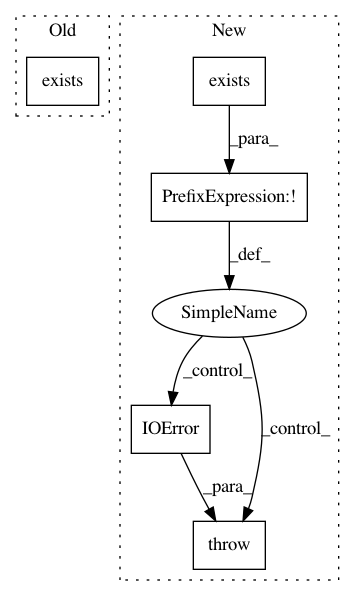

a5d4da0aca9d6bc79fd41e50ee5ab9ab8f063bd0,setup.py,,_download_jquery_to,#Any#,118
Before Change
// single_figure.html and all_figures.html.
url = "https://jqueryui.com/resources/download/jquery-ui-1.12.1.zip"
sha = "f8233674366ab36b2c34c577ec77a3d70cac75d2e387d8587f3836345c0f624d"
if not os.path.exists(os.path.join(dest, "jquery-ui-1.12.1")):
os.makedirs(dest, exist_ok=True)
try:
buff = download_or_cache(url, sha)
After Change
if sdist_src.exists():
shutil.copytree(sdist_src, dest / name)
return
if not (dest / name).exists():
dest.mkdir(parents=True, exist_ok=True)
try:
buff = download_or_cache(url, sha)
except Exception:
raise IOError(f"Failed to download jquery-ui. Please download "
f"{url} and extract it to {dest}.")
with ZipFile(buff) as zf:
zf.extractall(dest)
In pattern: SUPERPATTERN
Frequency: 3
Non-data size: 5
Instances
Project Name: matplotlib/matplotlib
Commit Name: a5d4da0aca9d6bc79fd41e50ee5ab9ab8f063bd0
Time: 2019-08-05
Author: anntzer.lee@gmail.com
File Name: setup.py
Class Name:
Method Name: _download_jquery_to
Project Name: HazyResearch/fonduer
Commit Name: 09363dbb57c260cbcc400baaee8e76063153b4b5
Time: 2018-02-10
Author: senwu@cs.stanford.edu
File Name: fonduer/snorkel/parser/rule_parser.py
Class Name: SpacyTokenizer
Method Name: model_installed
Project Name: HazyResearch/fonduer
Commit Name: 09363dbb57c260cbcc400baaee8e76063153b4b5
Time: 2018-02-10
Author: senwu@cs.stanford.edu
File Name: fonduer/snorkel/parser/spacy_parser.py
Class Name: Spacy
Method Name: model_installed